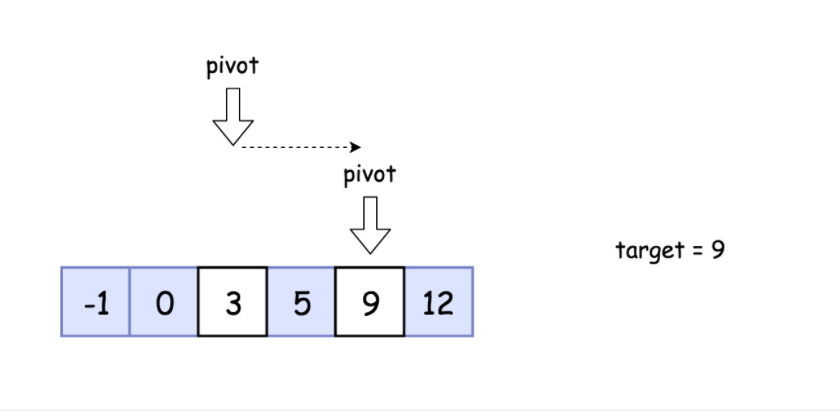
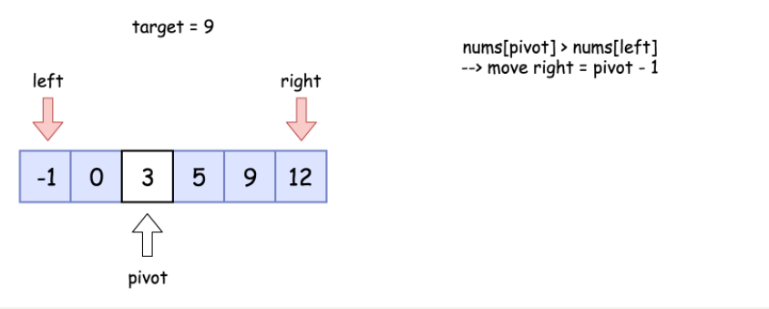
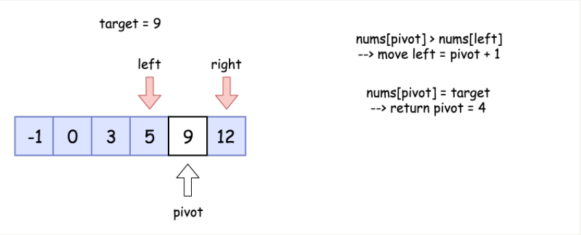
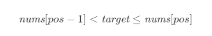
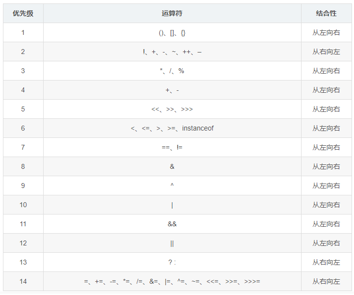
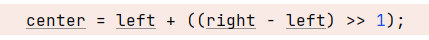

滑动窗口算法其实和这个是一样的，只是用的地方场景不一样，可以根据需要调整窗口的大小，有时也可以是固定窗口大小。
使用二分查找的必要条件
1.必须采用 顺序存储结构
2.必须按关键字大小有序排列
704. 二分查找
给定一个 n 个元素有序的（升序）整型数组 nums和一个目标值 target ，写一个函数搜索 nums 中的target，如果目标值存在返回下标，否则返回-1。
思路
二分查找是一种基于比较目标值和数组中间元素的教科书式算法。
如果目标值等于中间元素，则找到目标值。
如果目标值较小，继续在左侧搜索。
如果目标值较大，则继续在右侧搜索。

算法
1 | 初始化指针 left = 0, right = n - 1。 |


代码
1 | class Solution { |
复杂度分析
- 时间复杂度：
O(logN)。 - 空间复杂度：
O(1)。
278. 第一个错误的版本
你是产品经理，目前正在带领一个团队开发新的产品。不幸的是，你的产品的最新版本没有通过质量检测。由于每个版本都是基于之前的版本开发的，所以错误的版本之后的所有版本都是错的。
假设你有 n 个版本 [1, 2, …, n]，你想找出导致之后所有版本出错的第一个错误的版本。
你可以通过调用 bool isBadVersion(version) 接口来判断版本号 version 是否在单元测试中出错。实现一个函数来查找第一个错误的版本。你应该尽量减少对调用 API 的次数。
1 | 示例 1： |
思路及算法
因为题目要求尽量减少调用检查接口的次数，所以不能对每个版本都调用检查接口，而是应该将调用检查接口的次数降到最低。
注意到一个性质：当一个版本为正确版本，则该版本之前的所有版本均为正确版本；当一个版本为错误版本，则该版本之后的所有版本均为错误版本。我们可以利用这个性质进行二分查找。
具体地，将左右边界分别初始化为 1 和 n，其中 n 是给定的版本数量。设定左右边界之后，每次我们都依据左右边界找到其中间的版本，检查其是否为正确版本。如果该版本为正确版本，那么第一个错误的版本必然位于该版本的右侧，我们缩紧左边界；否则第一个错误的版本必然位于该版本及该版本的左侧，我们缩紧右边界。
这样我们每判断一次都可以缩紧一次边界，而每次缩紧时两边界距离将变为原来的一半，因此我们至多只需要缩紧 O(logn) 次。
代码
1 | /* The isBadVersion API is defined in the parent class VersionControl. |
复杂度分析
- 时间复杂度：
O(log)，其中n是给定版本的数量。 - 空间复杂度：
O(1)。我们只需要常数的空间保存若干变量。
35. 搜索插入位置
给定一个排序数组和一个目标值，在数组中找到目标值，并返回其索引。如果目标值不存在于数组中，返回它将会被按顺序插入的位置。
请必须使用时间复杂度为 O(log n) 的算法。
1 | 示例 1: |
思路与算法
假设题意是叫你在排序数组中寻找是否存在一个目标值，那么训练有素的读者肯定立马就能想到利用二分法在O(logn)的时间内找到是否存在目标值。但这题还多了个额外的条件，即如果不存在数组中的时候需要返回按顺序插入的位置，那我们还能用二分法么？答案是可以的，我们只需要稍作修改即可。
考虑这个插入的位置 pos，它成立的条件为：

其中 nums 代表排序数组。由于如果存在这个目标值，我们返回的索引也是pos，因此我们可以将两个条件合并得出最后的目标：「在一个有序数组中找第一个大于等于target 的下标」。
问题转化到这里，直接套用二分法即可，即不断用二分法逼近查找第一个大于等于target 的下标 。下文给出的代码是笔者习惯的二分写法，ans 初值设置为数组长度可以省略边界条件的判断，因为存在一种情况是target 大于数组中的所有数，此时需要插入到数组长度的位置。
代码
1 | class Solution { |
复杂度分析
- 时间复杂度：
O(logn)，其中n为数组的长度。二分查找所需的时间复杂度为O(logn)。 - 空间复杂度：
O(1)。我们只需要常数空间存放若干变量。
特别说明
可能出现的死循环问题，二分查找中用＞＞1代替/2居然死循环了
运算符的优先级

加减运算符的优先级大于位运算优先级，所有在使用位运算符时一定要添加括号；

递归解法
1 | class Solution { |

...
...
Copyright 2021 sunfy.top ALL Rights Reserved